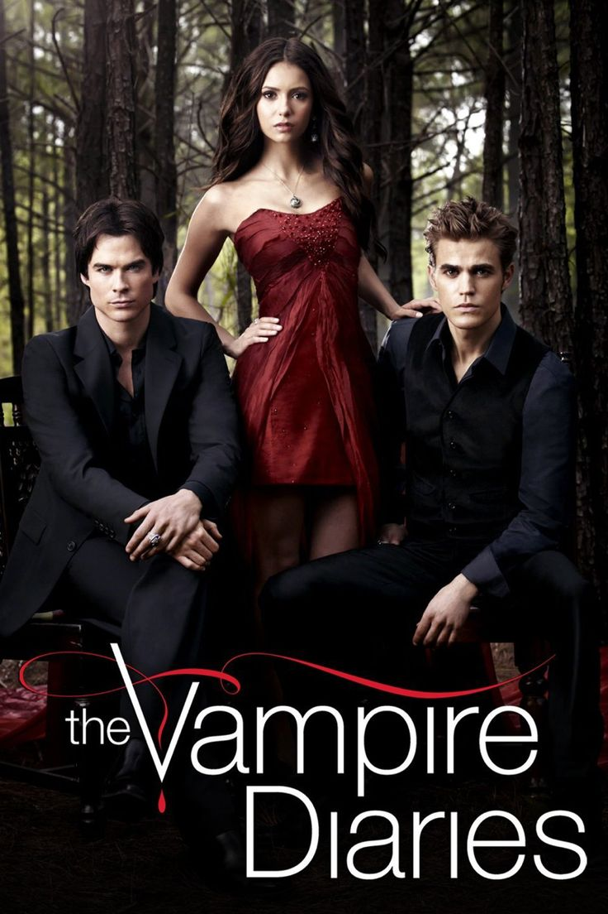
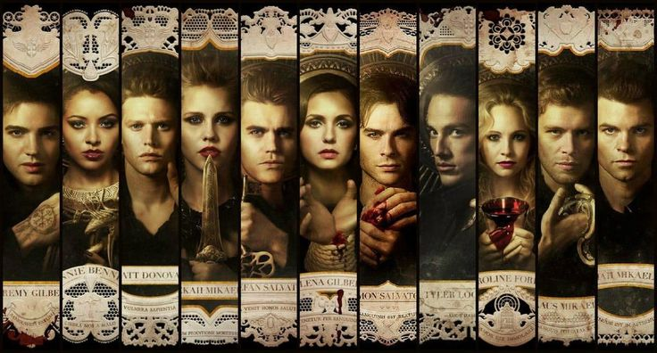

<html>
    <html lang="en">
        <head>
            <meta charset="utf-8">
            <meta name="viewport" content="width=device-width, initial-scale=1.0">
            <title>TD</title>
        </head>
</html>
<style>
    body{
        background-color: rgb(1, 3, 29);
        font-family: Arial;
        color: antiquewhite;
    }
    .sol_kisim{
        background-color: rgb(9, 3, 54);
        width: 20%;
        padding: 15px;
        text-align: center;
        float:left;
    }
    .sag_kisim{
        width: 75%;
        float: right;
    }
    .menu{
        list-style-type: none;
        margin-bottom: 50px;
        width: 100%;
    }
    .menu li{
        padding: 3px;
        border-bottom: solid 3px white;
        float: left;
        font-display: none;
    }
    .menu li:hover{
        background-color: transparent;
    }
    a{color:white;
    text-decoration: none;}
    .btn{
    width: 13em;
    height: 3em;
    border-radius: 30em;
    font-size: small;
    border: none;
    position: absolute;
    right:450px;
    cursor: pointer;
    overflow: hidden;
    z-index: 1;
    box-shadow: 6px 6px 12px #000000, -6px 6px 12px #030101;
    float: center;
    place-items: center;
}
.btn::before{
    content: '';
    width: 0;
    height: 3em;
    border-radius: 30em;
    position: absolute;
    top: 0;
    left: 0;
    background-image: linear-gradient(to right, #ffffff 0%, #ffffff 100%);
    transition: .5s ease;
    display: block;
    z-index: -1;
}
.btn:hover::before{
    width: 9em;
}
</style>
</head>
<body>
    <div class="sol_kisim">
        
        <br>The Vampire Diaries<br>
        <ul class="menu">
            <li><a href="karakterlertvd.html">Karakterler</a></li><br><br>
            <li><a href="oyunculartvd.html">Oyuncular</a></li><br><br>
            <li><a href="galeritvd.html">Galeri</a></li><br><br>
            <li><a href="videolartvd.html">Videolar</a></li><br><br>
            <li><a href="giris.html">Giriş</a></li><br><br>
        </ul>
        19.12.2024 tarihinde açıldı. <br><br>
        Tuğçe Dinçer
</div>
<div class="sag_kisim">
    
    <h1>Tanıtım</h1>
    <h3>The Vampire Diaries, L. J. Smith'in aynı adlı kitap serisine dayanan, biraz doğaüstü bir konu içeren bir drama dizisidir. Dizi 2009 yılında başlayıp sekiz sezon boyunca devam etmiştir ve vampirler, kurt adamlar, cadılar ve diğer doğaüstü varlıklar hakkındadır. </h3>
    <h3>Doğaüstü sırlarla dolu bir kasaba olan Mystic Falls'da geçen dizi, tipik bir Amerikan kasabası gibi görünse de bundan çok daha fazlası var. Burası insan ve doğaüstü varlıkların bir araya geldiği ve aralarındaki ilişkilerin karmaşık olduğu bir yer.</h3>
    <h3>Hikaye, bir lise öğrencisi olan Elena Gilbert'in ailesini kaybetmesiyle başlıyor. Kasabaya yeni taşınmış olan Salvatore kardeşler Stefan ve Damon ile tanışır. Onlar vampirdir ve Elena'nın hayatını tamamen değiştirirler.</h3>
    <h3>Dizi, birbirinden çok farklı kişiliklere sahip bu iki vampirin Elena'nın hayatını nasıl etkilediğini anlatıyor. Stefan iyi olan, Damon ise daha çok kötü çocuktur ve her ikisinin de Elena'nın hayatı üzerinde büyük bir etkisi vardır.Dizi oldukça duygusal ve dramatiktir ve Elena, Stefan ve Damon arasındaki aşk üçgeni onu bu kadar ilginç kılan şeydir.</h3>
    <h3>The Vampire Diaries sadece vampirlerle ilgili değil - kurtadamlar, cadılar ve doğaüstü lanetler de var. Tüm bu unsurlar diziyi daha heyecanlı kılıyor ve karakterlerin kararlarını ve ilişkilerini etkiliyor.</h3>
    <h3>Dizi sadece romantizmle değil, aile ve dostlukla da ilgili. Salvatore kardeşlerin geçmişi, Mikaelson ailesi ve Elena'nın arkadaşları Bonnie ve Caroline ile olan ilişkileri hikayeyi daha ilginç hale getiriyor ve izleyicilere farklı bakış açıları kazandırıyor.</h3>
    <h3>Elena'nın en yakın arkadaşı Bonnie, doğaüstü olayların çözümünde büyük rol oynayan süper güçlü bir cadı. Bonnie'nin sihirli yetenekleri ve fedakarlıkları hikayeye duygusal bir derinlik katarken, dizinin en dramatik anlarından bazılarını da yaratıyor.</h3>
    <h3>Katherine Pierce, Klaus Mikaelson ve Kai Parker gibi karakterler hikayeye karmaşıklık ve gerilim katıyor. Her biri zeki ve tehlikeli ve ana karakterleri sınırlarına kadar zorluyorlar.</h3>
    <h3>Dizi, The Originals ve Legacies gibi spin-off'larla daha geniş bir evrenin kapılarını açtı. The Originals, Mikaelson ailesinin hikayesini daha derinlemesine ele alırken, Legacies ise daha genç nesil doğaüstü varlıkların maceralarını takip ederek The Vampire Diaries hayranları için daha fazla içerik sunuyor.</h3>
    <br><br><br>
    <br>
    <a href="karakterlertvd.html"></a>
    <a href="karakterlertvd.html"></a>
    <a href="karakterlertvd.html"><br></a><br><br>
    <a href="karakterlertvd.html"><button class="btn">Daha fazla karakter için!</button><br/><hr/>
</div>
</body>
</html>